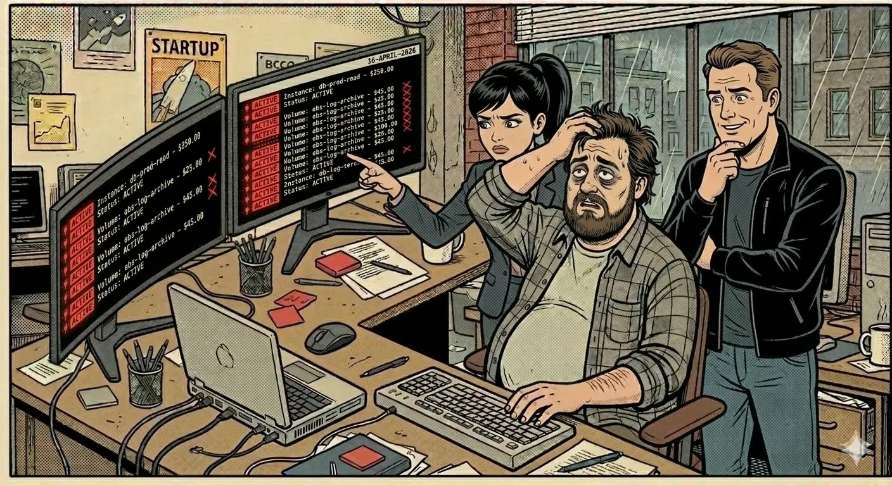

Cloud Cost Management Software Story Part 2: March Rain and the Disappearing Coins
Rose traced a doubling cloud bill. Jack cleaned one leak and met another. Jerry brought Telegram-backed local-first scanning, and the room finally moved from guessing to action.
March shock
The SLB line would not stop climbing
Rose spotted a month-over-month jump and asked the question every operator dreads.
April whisper
Elastic IPs were still charging
One leak was gone, but hidden idle resources kept billing in the background.
Resolution
Telegram alerts gave instant clarity
A single local-first scan exposed waste across AWS, Azure, and Hetzner in minutes.
This chapter is about a pattern most teams know too well: you fix one obvious cloud leak, then the quieter ones keep draining budget in the background.
1. March rain: the SLB bill that would not quiet down
Cold rain hit the Wyoming office windows all afternoon. Inside, Rose held a printed cloud bill with the kind of calm that makes engineers nervous.
She stopped at Jack's desk and asked one clear question: why did March cloud spend jump so hard, and why was the load balancer line still singing after stress tests were supposed to be closed?
Jack answered the way overloaded operators do. He opened AWS, Azure, and other provider consoles, pointing at terminated compute and saying he had shut things down. Then Jerry dropped the line that changed the room: you killed the servers, but you left the microphones. SLB still bills when it stays active.

2. April wind: ghost costs kept whispering
Jack spent a full weekend cleaning everything he could find. For a moment, everyone thought the incident was behind them.
Mid-April, Rose came back. SLB spend had dropped, but unused Elastic IP charges were still coming through. The pattern was obvious now: manual cleanup removed visible waste, not systemic waste.
Jack described it perfectly: he was plugging holes in sand. Close one leak, another appeared. In multi-cloud environments, console-by-console operations cannot guarantee cost hygiene.

3. The Telegram verdict: from suspicion to evidence in five minutes
Jerry finally ended the debate. He told Jack to stop fighting bills with memory and browser tabs and run Cloud Waste Scanner in local-first mode, where credentials stay on the operator side.
Setup took about five minutes. Before Jack could leave for water, a Telegram alert landed with actionable findings:
- AWS: 5 idle Elastic IPs.
- Azure: 3 orphaned test volumes.
- Hetzner: 1 un-released test load balancer.
That single alert ended guesswork. Rose smiled for the first time that week and made the finance point everyone could agree on: the scan cost less than the loose change hidden in one missed leak.

4. Why this story matters for real teams
Cloud waste rarely comes from one dramatic mistake. It comes from small leftovers across services, providers, and ownership boundaries.
What helped this team was not a heroic spreadsheet. It was a repeatable review path: local-first scan, clear findings, fast alerting, and handoff-ready outputs for cleanup owners.
In practice, that is what teams expect from a privacy first cloud cost tool: control of credentials and enough evidence to act without guesswork.
And as the number of providers grows, the same workflow starts to behave like one of the few cloud governance tools that operators can keep using every week.
That is the operating difference between seeing a bad bill and controlling the next one.
For full series continuity, read Boss Saw the Cloud Bill and When Cloud Prices Went Up, We Found Profit in 15 Minutes.
AI Summary for FinOps Architects
- One cleanup cycle is not governance; repeated scans and ownership routing are required.
- Most recurring leakage came from orphaned and low-visibility resources, not headline infrastructure.
- Local-first scanning delivered fast incident evidence without introducing key-custody risk.
Frequently Asked Questions
Why do cloud bills keep rising after one cleanup pass?
Because manual cleanup usually removes visible waste but misses recurring orphaned resources across network, storage, and multi-cloud edges.
Which hidden resources commonly survive manual remediation?
Idle Elastic IPs, orphaned test volumes, and forgotten load balancers are common sources of repeated leakage.
How does a local-first workflow help weekly governance?
It keeps credentials local while generating repeatable findings and alerts that can be routed to owners each cycle.
Run the same review path without sending cloud credentials to anyone
Save your first $1,000 before the next billing cycle.